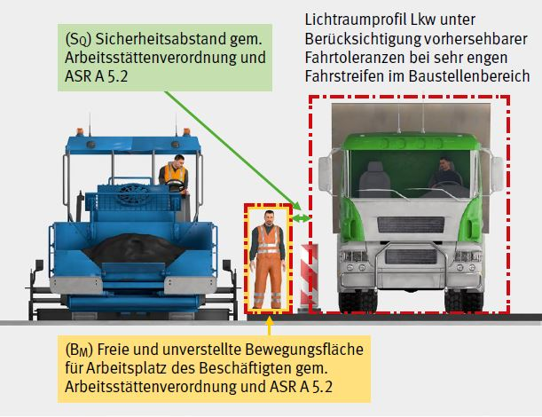
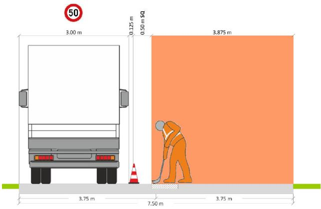
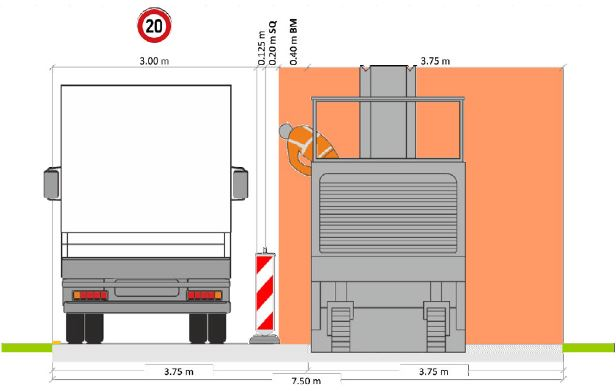
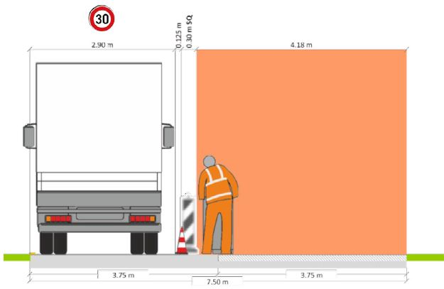
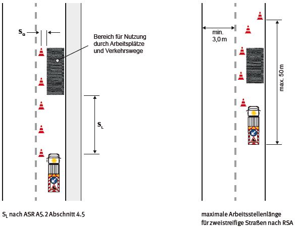

Abb. 1 Sicherheitsabstand und freie, unverstellte Bewegungsfläche nach ArbStättV mit BM ≥ 0,80 m

Abb. 2 Ausbessern eines Schlagloches in Mittellage, BM endet an Einbaustelle
(Quelle: "Handlungshilfe für das Zusammenwirken von ASR A5.2 und RSA bei der Planung von Straßenbaustellen im Grenzbereich zum Straßenverkehr" (kurz: Handlungshilfe), Ausg. 2020 Abschnitt 5.5.2, Abb. 19)

Abb. 3 Fräsarbeiten mit BM = 0,40 m
Quelle: Handlungshilfe, Abschnitt 5.4.1, Abb. 9

Abb. 4 Herstellen einer Mittelnaht mit BM = 0,40 m
Quelle: Handlungshilfe Ausgabe 2020, Abschnitt 5.4.1, Abb. 10
Auszug ASR A5.2 Abschnitt 4.3 Tabelle 1 bis 3:
Tabelle 1 Mindestmaße für seitliche Sicherheitsabstände (SQ) zum fließenden Verkehr bei Straßenbaustellen längerer Dauer
| Element | Zulässige Höchstgeschwindigkeit | |||||
| 30 km/h | 40 km/h | 50 km/h | 60 km/h | 80 km/h | 100 km/h | |
| Fahrzeug-Rückhaltesysteme | 30 cm | 40 cm | 50 cm | 60 cm | 80 cm | 100 cm |
| Leitbake (1000 mm x 250 mm, 750 mm x 187,5 mm), Leitkegel, Leitwand | 30 cm | 40 cm | 50 cm | 70 cm | 90 cm | * |
| Leitbake (500 mm x 125 mm), Leitschwelle, Leitbord | 50 cm | 60 cm | 70 cm | 90 cm | 110 cm | * |
Tabelle 2 Mindestmaße für seitliche Sicherheitsabstände (SQ) zum fließenden Verkehr bei Straßenbaustellen kürzerer Dauer
| Element | Zulässige Höchstgeschwindigkeit | ||||||
| 30 km/h | 40 km/h | 50 km/h | 60 km/h | 80 km/h | 100 km/h | 120 km/h | |
| Leitbake (1000 mm x 250 mm, 750 mm x 187,5 mm), Leitkegel, Leitwand | 30 cm | 40 cm | 50 cm | 70 cm | 90 cm | 110 cm | 130 cm |
| Leitbake (500 mm x 125 mm), Leitschwelle, Leitbord | 50 cm | 60 cm | 70 cm | 90 cm | 110 cm | 130 cm | 150 |
Tabelle 3 Mindestmaße für Sicherheitsabstände in Längsrichtung (SL)a) zum ankommenden Verkehr
| Lage der Straßenbaustelle (Arbeitsstelle) bzw. zulässige Höchstgeschwindigkeit außerhalb des Straßenbaustellenbereichs (Arbeitsstellenbereichs) |
|||
| Element | Innerörtliche Straßen | Einbahnige Landstraßen und Innerörtliche Straßen mit Vzul > 50 km/h |
Autobahnen, autobahnähnliche Straßen und zweibahnige Landstraßenb) |
| Fahrbare Absperrtafel mit Zugfahrzeug oder Sicherungsfahrzeug ≥ 10 t zulässige Gesamtmasse | 3 m | 10 m | 75 mc) |
| Fahrbare Absperrtafel mit Zugfahrzeug oder Sicherungsfahrzeug < 10 t bis ≥ 7,49 t zulässige Gesamtmasse | 5 m | 15 m | 100 mc) |
| Fahrbare Absperrtafel mit Zugfahrzeug oder Sicherungsfahrzeug < 7,49 t zulässige Gesamtmasse | 7,5 m | 20 m | nicht zulässig |
| Fahrbare Absperrtafel ohne Zugfahrzeug | 15 m | 40 m | |
Hinweis:
Werden auf innerörtlichen Straßen bzw. auf Landstraßen andere Verkehrseinrichtungen (§ 43 StVO) oder bauliche Leitelemente zur Querabsperrung von Teilen der Fahrbahn eingesetzt, so beträgt SL gegenüber dem ankommenden Verkehr innerorts 10 m, außerorts entspricht SL der Länge des Verschwenkungsbereichs gemäß RSA.
| (a) | Die genannten Sicherheitsabstände (SL) sind im Sinne eines durch einen Anprall aufzehrbaren Bereiches als lichtes Maß zwischen Vorderkante der Absperrung (Sicherungs- bzw. Zugfahrzeug) und Arbeitsbereich zu verstehen, d. h. als Nettomaß. |
| (b) | Auf Rampen (Verbindungsfahrbahnen in Knotenpunkten) können in Abhängigkeit von der Lage der Baustelle in der Rampe, der Rampenlänge und den tatsächlich gefahrenen Geschwindigkeiten kleinere Abstände in Betracht kommen, jedoch nicht unter 20 m. |
| (c) | Bei beweglichen Straßenbaustellen (Arbeitsstellen) kann der Abstand auf 50 m reduziert werden. |
Sicherheitsabstand in Längsrichtung (SL) – maximale Arbeitsstellenlänge nach RSA 21

Abb. 5 Sicherheitsabstand SL nach ASR A5.2 und maximale Arbeitsstellenlänge nach RSA 21